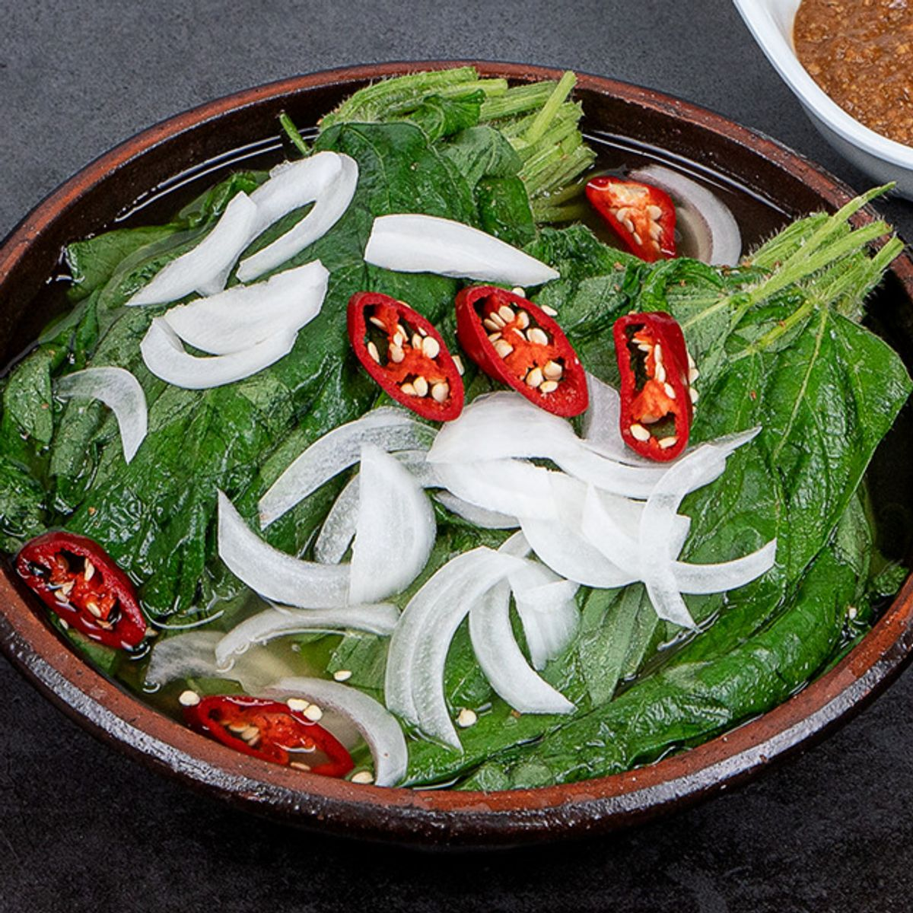
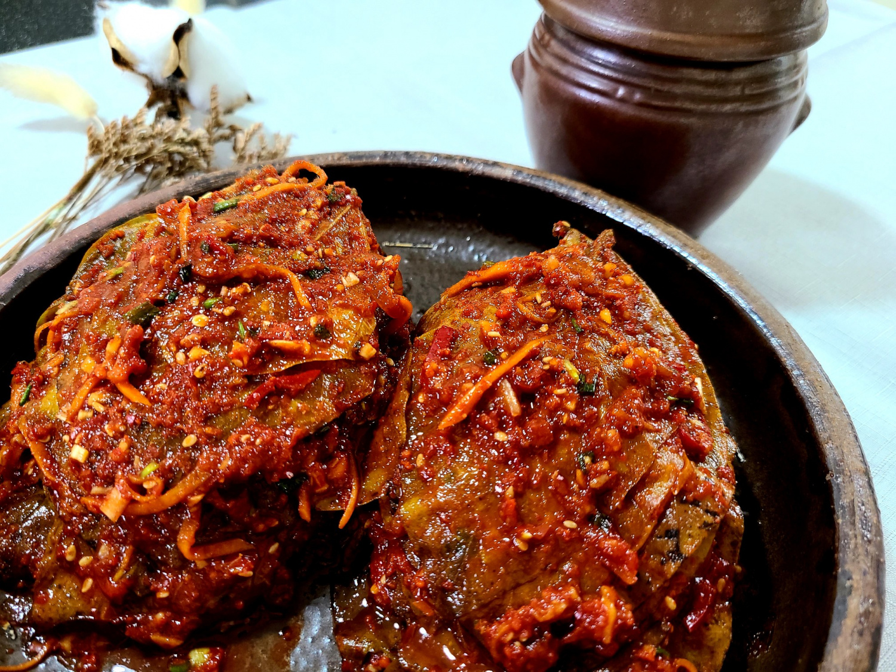

콩잎 김치.
콩잎 짱아찌도 그렇고, 콩잎으로 만든 걸 주로 먹는데
어릴 떄부터 먹어서 익숙한 사람들은 없어서 못 먹는건데 왜 지랄이냐 하고
안먹던 사람들은 대부분 이걸 왜 먹는거임?? 상태가 되는 김치.
음식은 어릴 때의 기억이 중요하다는 걸 다시금 일깨워준다.
경상도 스타일 김치도 좋아하고 전라도 스타일 김치도 다 좋아하는 데 이 콩잎 김치는 좀 힘듬....


콩잎 김치.
콩잎 짱아찌도 그렇고, 콩잎으로 만든 걸 주로 먹는데
어릴 떄부터 먹어서 익숙한 사람들은 없어서 못 먹는건데 왜 지랄이냐 하고
안먹던 사람들은 대부분 이걸 왜 먹는거임?? 상태가 되는 김치.
음식은 어릴 때의 기억이 중요하다는 걸 다시금 일깨워준다.
경상도 스타일 김치도 좋아하고 전라도 스타일 김치도 다 좋아하는 데 이 콩잎 김치는 좀 힘듬....
된장콩잎 없어서 못먹는 별미인데
씀바귀김치지
노인네들 한테도 뭔맛으로 먹냐 물어보면 약이라 생각하고 먹는다함
존나 맛없엉
고들빼기는 쌉싸름하면서 존나 맛있는데 씀바귀는 별로임??
ㅇ걍 씀
깻잎두고 먹을 이유없다고봄 낙엽에 양념한 느낌임 ...

애초에 콩잎을 먹어본적이 없음
저거 맛있음.
약간 애매하면서도 오묘한 맛임. 콩잎 자체에서 약간 흙내 비스무리한 그런 맛 나는데 그게 양념속에 있는 아주 약한 단맛이랑 메인 맛인 매운맛 만나면 나는 맛이 맛있음
근데 콩잎 김치가 아니라 무침 아닌가
경상도인데 자라면서 콩잎은 한 번도 못 봤음 우리는 고춧잎을 먹었지
전 여친 대구사람인데 집에서 콩잎장아찌? 같은걸 들고옴 낙엽을 왜 쳐먹지? 싶었는데 먹어보니까 그냥 그럭저럭 먹을만한 낙엽이었음 끗
넌 여친 부모님이 해준 거 먹을때도 쳐먹는다 표현하냐
바람나서 헤어졌으니까 닥쳐줄래?
그러니까 바람나지 ㅋㅋ
뭔 좆병신같은 소리야 씹찐따년아 저 멀리꺼져줄래 좆같은농담으로 질척거리말고ㅠㅠ
재미도 좆도없는 병신아
뭣도 없는게 주말 오후 4시에 커뮤에서 같잖게 훈수두는게 가장 웃김
혹시 자기소개중?
시원하고 맛있음 다만 터레기가 신경쓰여 호불호가 있을수있음
대부분 김치가 어울리지만 된장콩잎 이런건 누룽지숭늉에 존나 어울림..
콩잎 울산 내려갈때마다 환장하고 먹음
반대로 난 갓김치를 못먹겠더라 ㅠ 맛음쪄 웩
위에는 낏잎이고 아래는 콩잎
개존맛인데 개맛없는거 먹었나보지
콩잎이 좀 뻣뻣하고 털 없는 깻잎 느낌이었던 거 같은데
어렸을때 갓김치가 (god)신김치 인줄알았는데 안셔서 의아했음
콩잎 싸먹으니까 개존맛니던데